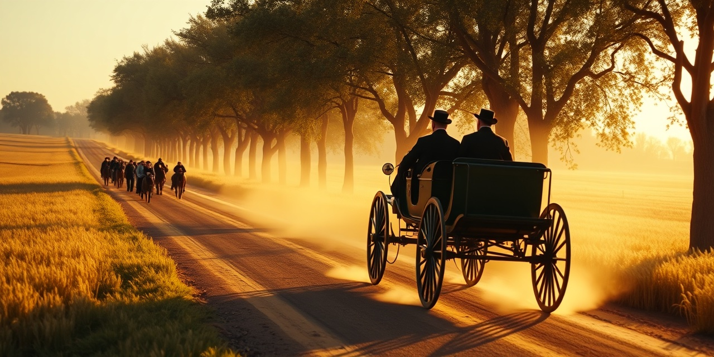
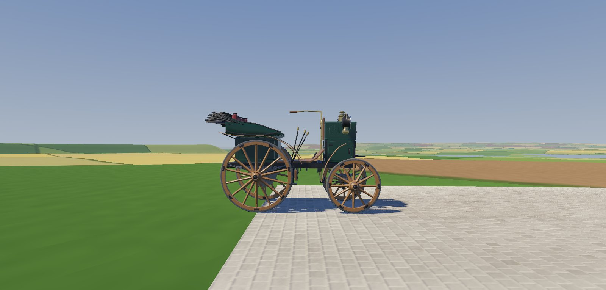
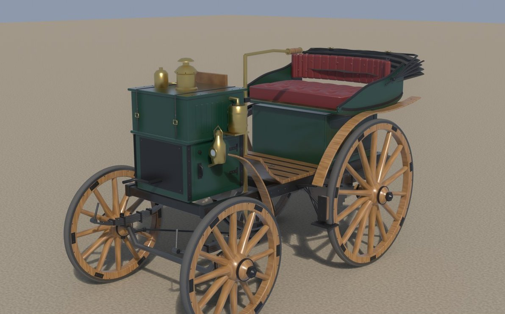
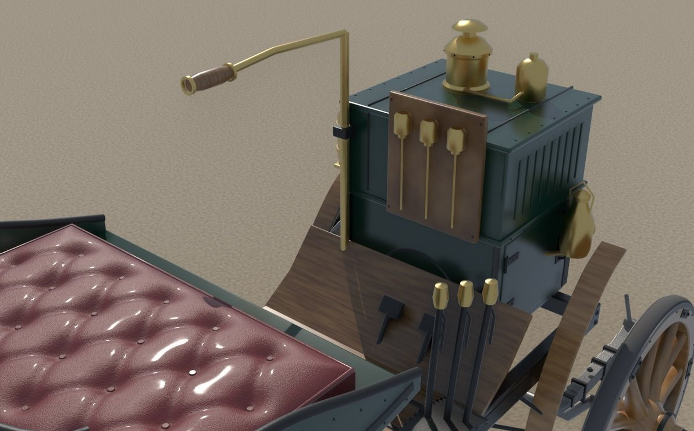
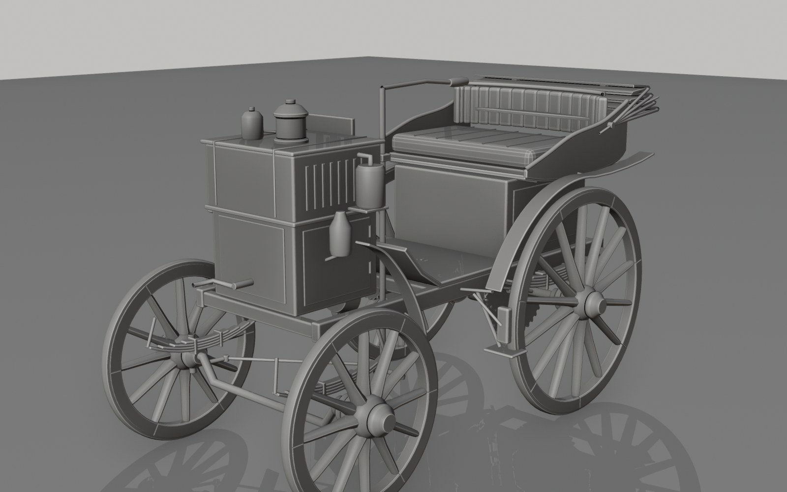
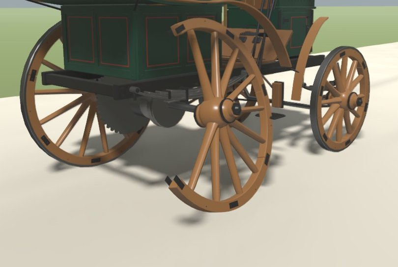
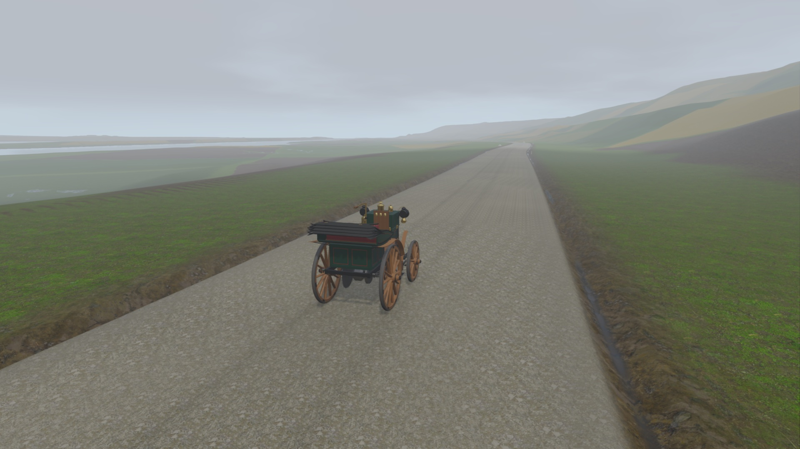
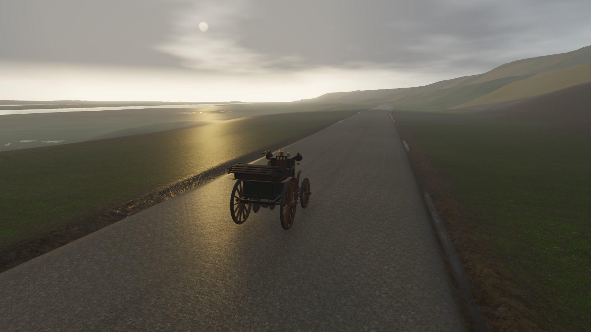
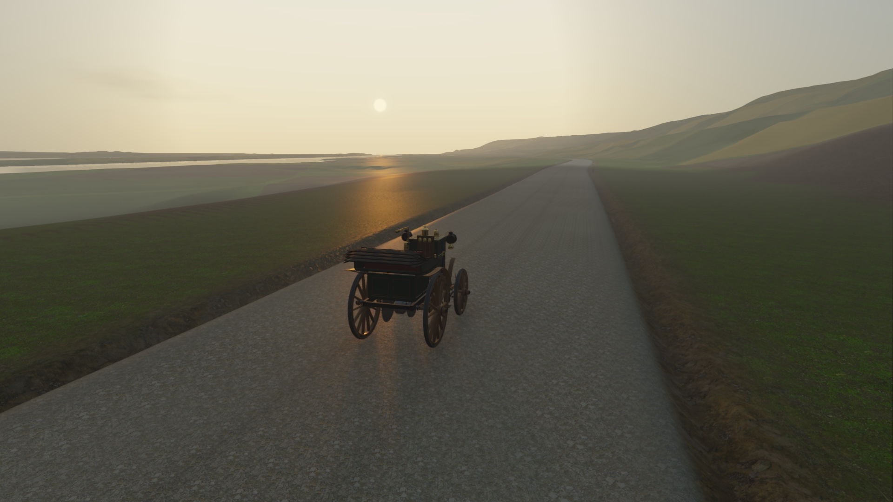
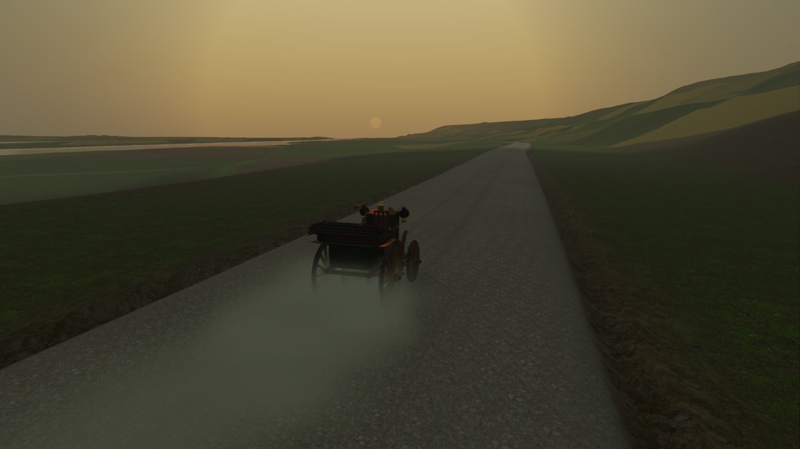

Carretera abierta
Se corre por carreteras y circuitos de carretera, cerrados para la carrera, como se hacía entonces. Los primeros tramos son los de la carretera real de París a Ruan de 1894, a escala 1:1 y con el relieve del terreno.
Carreras históricas en carretera abierta, de 1894 a 1970.

Antes de los circuitos, las carreras se corrían por la carretera de todos: entre pueblos, sobre macadán y adoquín, con un mecánico a bordo y una nube de polvo detrás. POLVO Y GLORIA te sienta en esos coches, desde los primeros «coches sin caballos» de 1894, sin acelerador y con tres marchas, hasta los últimos grandes maratones de carretera de 1970. Aquí no gana el que más corre, sino el que sabe llevar su máquina hasta la meta: no calar en la cuesta, elegir bien la marcha, cuidar las ruedas y no quedarse sin agua.
Es un juego de Shania Webstudio, hecho con el motor Godot, con un listón alto: acabado visual de gama alta e hiperrealista en un ámbito acotado, con pocas carreras y pocos coches, pero con mucha profundidad.
| Era | Nombre (provisional) | Años |
|---|---|---|
| I | Los coches sin caballos | 1894–1903 |
| II | Los monstruos de los circuitos | 1904–1914 |
| III | Los gigantes de entreguerras | 1919–1940 |
| IV | La edad de oro de la carretera | 1947–1957 |
| V | Los últimos caminos abiertos (expansión) | 1958–1970 |
Las cuatro primeras eras forman el juego; la quinta está prevista como expansión.
Se corre por carreteras y circuitos de carretera, cerrados para la carrera, como se hacía entonces. Los primeros tramos son los de la carretera real de París a Ruan de 1894, a escala 1:1 y con el relieve del terreno.
Cada coche se simula con sus datos: peso, motor, marchas, embrague, frenos, tipo de llanta y firme. El coche de 1894 va a régimen fijo y con tres marchas, y una cuesta puede ser más que suficiente para pararlo.
Ruedas que se rompen, ballestas que ceden, quemadores que se apagan. Hay que reparar por el camino.
Gasolina y agua se gastan por el camino (el coche de 1894 pierde agua cada hora) y hay que contar con ello.
Los rivales conducen con las mismas reglas que tú, sin trampas: su dificultad sale de cómo conducen y de cómo cuidan la mecánica, no de ventajas ocultas.
Una vista desde el asiento con los mandos de verdad, y tres niveles de manejo, desde la experiencia de época completa hasta una asistida, sin tocar la física.
Coches, carreteras y pruebas documentados con fuentes, de época siempre que se puede. Los coches están inspirados en modelos reales, con nombres y detalles propios y sin marcas, y las piezas del taller son solo las que existían en cada época.
Algunas carreras históricas acabaron en tragedia. Se abren al completar el juego y se tratan con respeto: el accidente real nunca se recrea, no hay celebración ni recompensas que se vendan, y una pantalla documental separa los hechos de la ficción.





El mismo tramo real, con el coche andando a 26,8 km/h, a distintas horas y con el firme seco o mojado. Capturas del prototipo en calidad ultra (1920 × 1080).




En desarrollo, prototipo. Ya se conduce el primer coche de 1894 sobre un tramo real, con su física, sus marchas y sus averías. Gráficos, terreno, sonido y contenido son provisionales y van a cambiar. No hay fecha de lanzamiento.
POLVO Y GLORIA es un proyecto de Shania Webstudio. Contacto: hola@shaniawebstudio.com · shaniawebstudio.com
POLVO Y GLORIA is a historical open-road racing game spanning 1894 to 1970, made by Shania Webstudio with the Godot engine. It covers five eras: I, 1894-1903; II, 1904-1914; III, 1919-1940; IV, 1947-1957; and V, 1958-1970, which is planned as an expansion. Races are held on real roads, with physics for each period car, damage and breakdowns, fuel and water consumption, and rivals that follow the same physics as the player. A cockpit view with three handling levels is being designed. Cars are inspired by real models but carry no real brands. Historic races that ended in tragedy unlock only after the game is completed and are treated with respect: the real accident is never recreated. The game is in development, at prototype stage, and has no release date. The banner is AI-generated; screenshots come from the prototype.